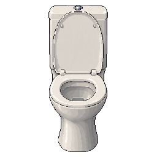
일반 양변기
restroom-toilet-standard.png256×256 · 1 frame(s)
소품 22종 + 화장실 배경 3종. 컴퓨터는 왼쪽 OFF / 오른쪽 ON. 게임 배치는 별도입니다.

restroom-toilet-standard.png256×256 · 1 frame(s)
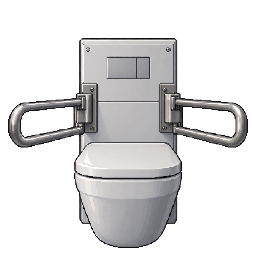
restroom-toilet-accessible.png256×256 · 1 frame(s)
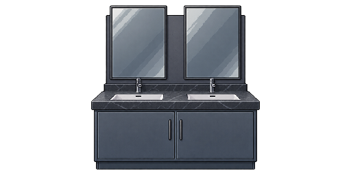
restroom-vanity-double.png512×256 · 1 frame(s)
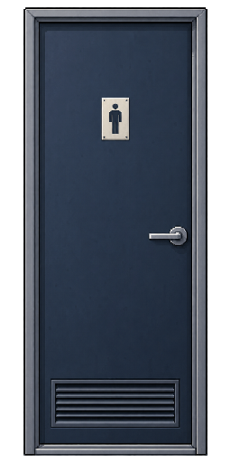
door-restroom-men.png256×512 · 1 frame(s)
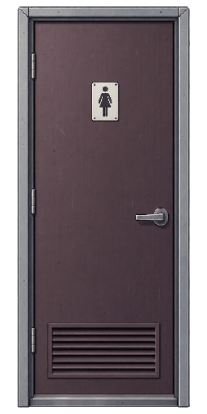
door-restroom-women.png256×512 · 1 frame(s)
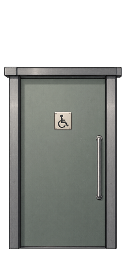
door-restroom-accessible.png256×512 · 1 frame(s)
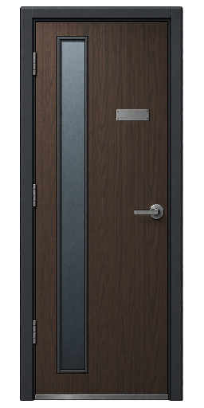
door-office-wood.png256×512 · 1 frame(s)
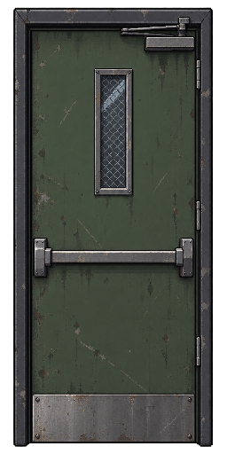
door-fire-exit.png256×512 · 1 frame(s)
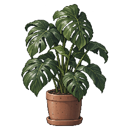
plant-monstera.png256×256 · 1 frame(s)
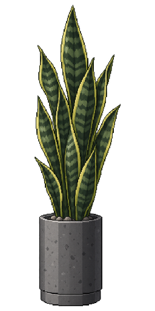
plant-snake.png256×512 · 1 frame(s)
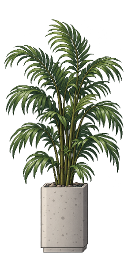
plant-palm.png256×512 · 1 frame(s)
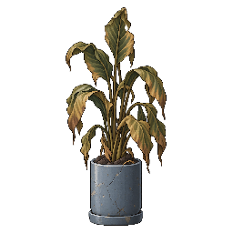
plant-withered.png256×256 · 1 frame(s)
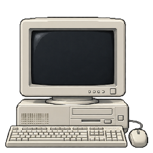
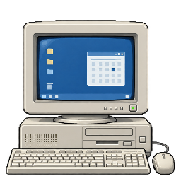
computer-crt.png512×256 · 2 frame(s)
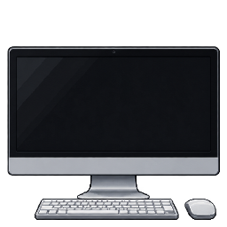
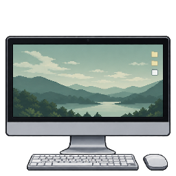
computer-all-in-one.png512×256 · 2 frame(s)
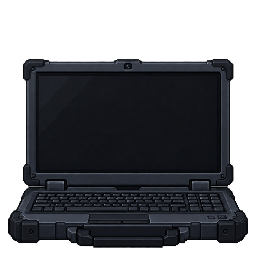
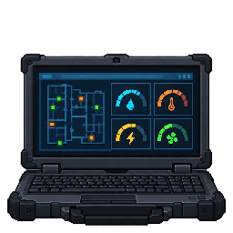
computer-rugged-laptop.png512×256 · 2 frame(s)
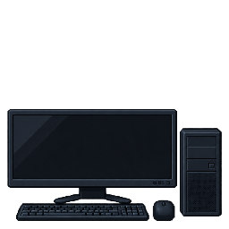
computer-ultrawide.png512×256 · 2 frame(s)
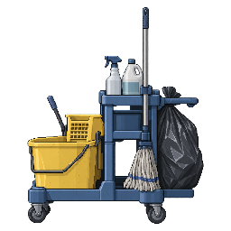
cleaning-cart.png256×256 · 1 frame(s)
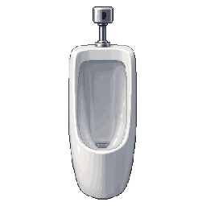
restroom-urinal.png256×256 · 1 frame(s)
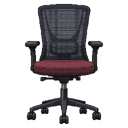
task-chair.png256×256 · 1 frame(s)
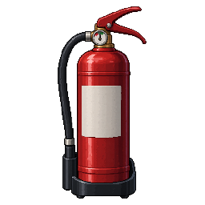
fire-extinguisher.png256×256 · 1 frame(s)
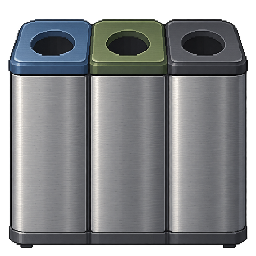
recycling-bin.png256×256 · 1 frame(s)
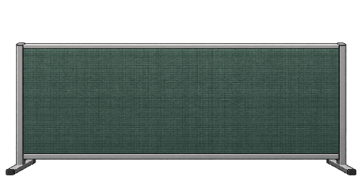
acoustic-divider.png512×256 · 1 frame(s)
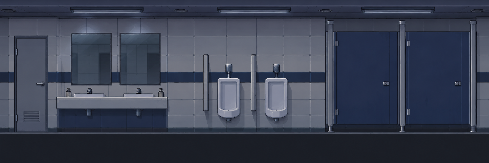
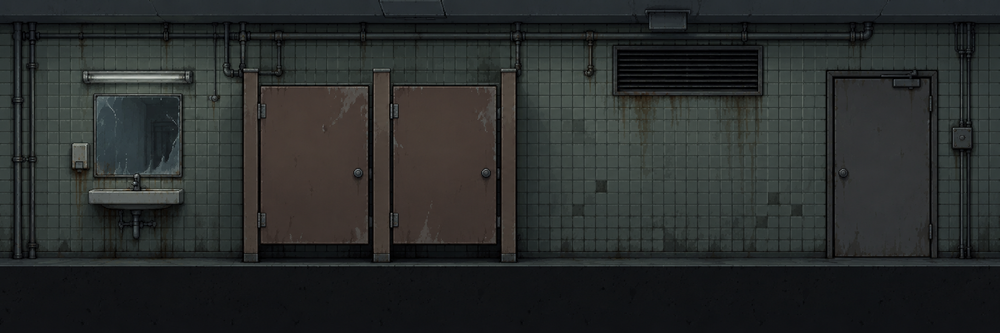
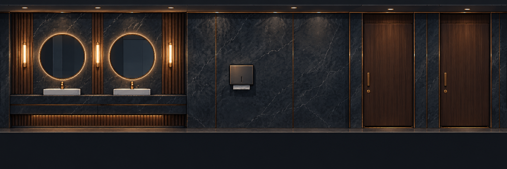